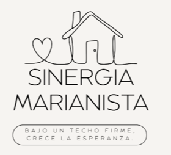
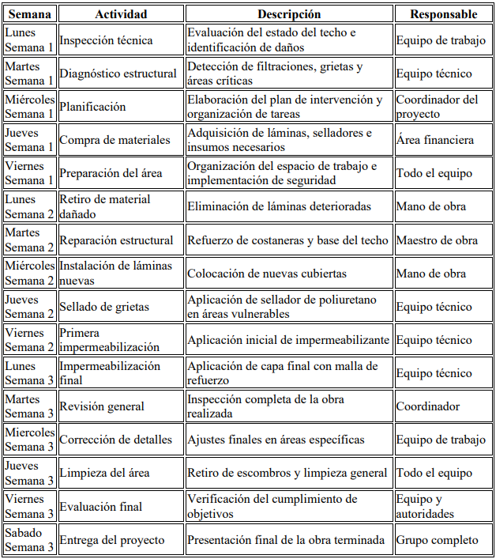
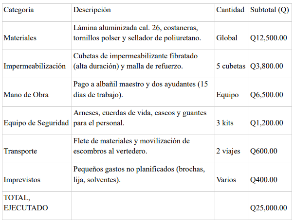

Objetivo: Ayudar a una comunidad que tienen diferentes necesidades
Se encontró una solución de forma escrita para ayudar a un grupo de personas con las necesidades básicas faltantes. No se fue de manera física, al campo o lugar donde se encuentra el problema sino, que el problema de este grupo de personas lo visualizamos de forma creativa.
Necesitábamos pensar como una compañía que ayudaba a una casa hogar, el nombre era Sinergia Marianista donde su misión y visión buscaba "Mejorar la seguridad y bienestar mediante la creación de espacios dignos y seguros para quienes lo necesitan." y el problema que íbamos a solucionar era el techo, ya que tenia deficiencias en la infraestructura.
Contábamos con 25 mil quetzales entonces tuvimos que realizar presupuesto a base de hipótesis para el entregable y la exposición de dicho proyecto.
Logo

Documento
Presentación
Cronograma

Presupuesto

Video Explicativo